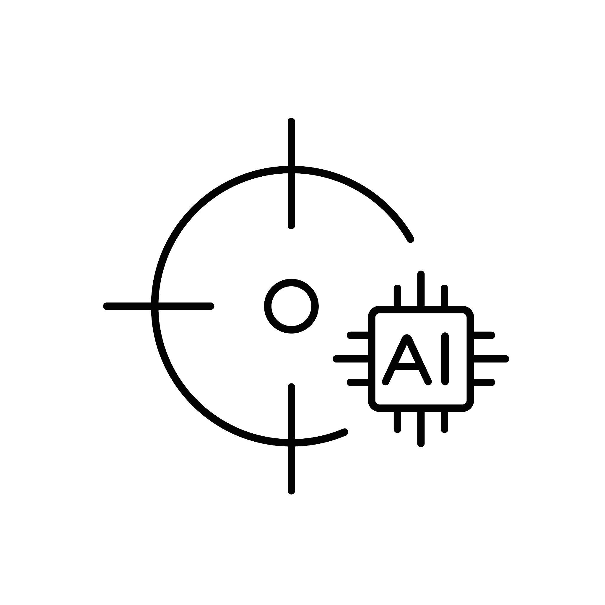

localbenchmark’s documentation!



localbenchmark is a Python package for local LLM evaluation: coding benchmarks, long-context stress tests, speed probes, and ranking plots — driven through LM Studio (OpenAI-compatible API).
It answers a practical question: can this model still write correct code when the context window is large, and is it fast enough that you would actually use it?
Key Features:
Coding benchmark: HumanEval-style tasks via LM Studio (temperature 0)
Long context: Fixed windows (e.g. 50k–180k); optional context fill
Speed probe: Prefill / decode tok/s at controlled tokens-in-cache levels
Resume-safe CSVs: Skip finished configs; retry LLM errors
Slow-model abort: Stop configs that stay below a minimum tok/s
Rank-sum plots: Pass rate, speed, TTFT, GPU, context — weighted ranking
Support
Yes! This library is entirely free but it runs on coffee. Your ❤️ is important to keep maintaining this package. You can support in various ways, have a look at the sponsor page.
Installation
pip install localbenchmark
Content
Background
Installation
Results
Examples
Documentation